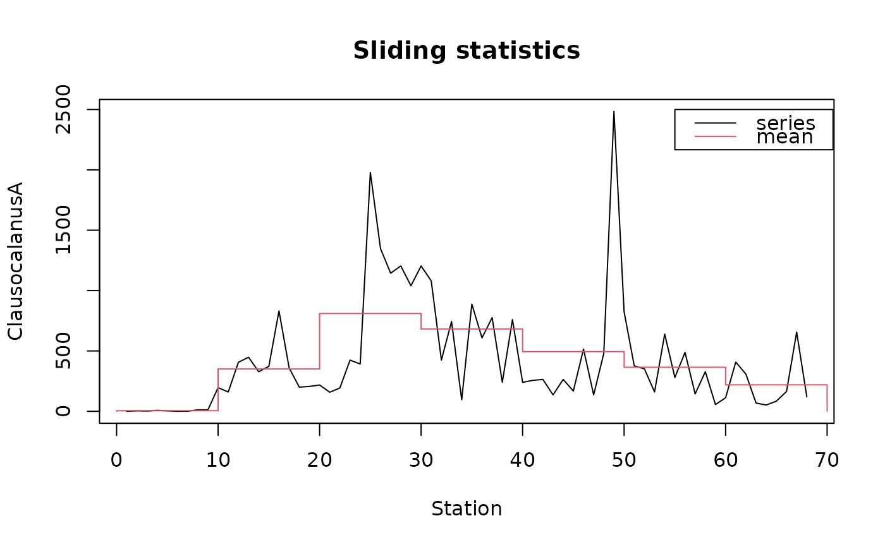
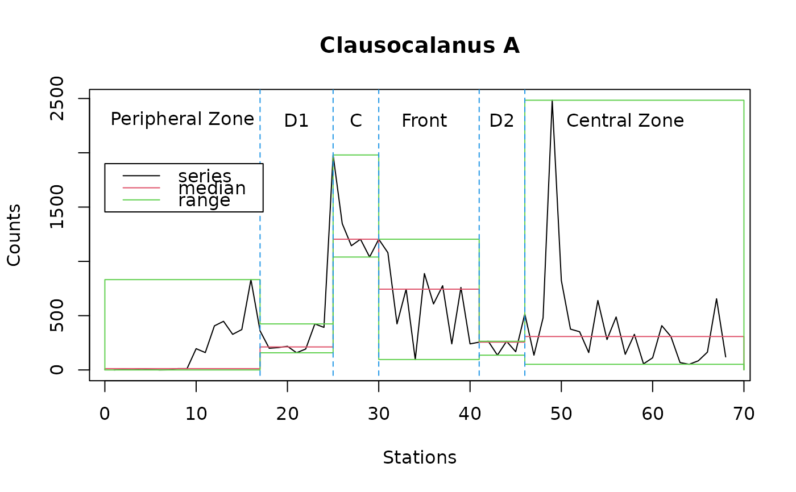

Sliding statistics
stat.slide.RdStatistical parameters are not constant along a time series: mean or variance can vary each year, or during particular intervals (radical or smooth changes due to a pollution, a very cold winter, a shift in the system behavior, etc. Sliding statistics offer the potential to describe series on successive blocs defined along the space-time axis
stat.slide(x, y, xcut=NULL, xmin=min(x), n=NULL, frequency=NULL,
deltat=1/frequency, basic=FALSE, desc=FALSE, norm=FALSE,
pen=FALSE, p=0.95)
# S3 method for class 'stat.slide'
print(x, ...)
# S3 method for class 'stat.slide'
plot(x, stat="mean", col=c(1, 2), lty=c(par("lty"), par("lty")),
leg=FALSE, llab=c("series", stat), lpos=c(1.5, 10), xlab="time", ylab="y",
main=paste("Sliding statistics"), ...)
# S3 method for class 'stat.slide'
lines(x, stat="mean", col=3, lty=1, ...)Arguments
- x
a vector with time data for
stat.slide(), or a 'stat.slide' object for the methods- y
a vector with observation at corresponding times
- xcut
a vector with the position in time of the breaks between successive blocs.
xcut=NULLby default. In the later case, a vector with equally spaced blocs is constructed usingxmin,nandfrequencyordeltat. If a value is provided forxcut, then it supersedes all these other parameters- xmin
the minimal value in the time-scale to use for constructing a vector of equally spaced breaks
- n
the number of breaks to use
- frequency
the frequency of the breaks in the time-scale
- deltat
the bloc interval for constructing an equally-spaced break vector.
deltatis 1/frequency- basic
do we have to return basic statistics (by default, it is FALSE)? These are: the number of values (nbr.val), the number of null values (nbr.null), the number of missing values (nbr.na), the minimal value (min), the maximal value (max), the range (range, that is, max-min) and the sum of all non-missing values (sum)
- desc
do we have to return descriptive statistics (by default, it is FALSE)? These are: the median (median), the mean (mean), the standard error on the mean (SE.mean), the confidence interval of the mean (CI.mean) at the
plevel, the variance (var), the standard deviation (std.dev) and the variation coefficient (coef.var) defined as the standard deviation divided by the mean- norm
do we have to return normal distribution statistics (by default, it is FALSE)? the skewness coefficient g1 (skewness), its significant criterium (skew.2SE, that is, g1/2.SEg1; if skew.2SE > 1, then skewness is significantly different than zero), kurtosis coefficient g2 (kurtosis), its significant criterium (kurt.2SE, same remark than for skew.2SE), the statistic of a Shapiro-Wilk test of normality (normtest.W) and its associated probability (normtest.p)
- pen
do we have to return Pennington and other associated statistics (by default, it is FALSE)? pos.median, pos.mean, pos.var, pos.std.dev, respectively the median, the mean, the standard deviation and the variance, considering only non-null values; geo.mean, the geometric mean that is, the exponential of the mean of the logarithm of the observations, excluding null values. pen.mean, pen.var, pen.std.dev, pen.mean.var, respectively the mean, the variance, the standard deviation and the variance of the mean after Pennington's estimators (see
pennington())- p
the probability level to use to calculate the confidence interval on the mean (CI.mean). By default,
p=0.95- stat
the statistic to plot on the graph. You can use "min", "max", "median", "mean" (by default), "pos.median", "pos.mean", "geo.mean" and "pen.mean". The other statistics cannot be superposed on the graph of the series in the current version of the function
- col
the colors to use to plot the initial series and the statistics, respectively. By default,
col=c(1,2)- lty
the style to use to draw the original series and the statistics. The default style is used if this argument is not provided
- leg
if
leg=TRUE, a legend box is drawn on the graph- llab
the labels to use for the legend. By default, it is "series" and the corresponding statistics provided in
stat, respectively- lpos
the position of the top-left corner (x,y) of the legend box in the graph coordinates. By default
lpos=c(1.5,10)- xlab
the label of the x-axis
- ylab
the label of the y-axis
- main
the main title of the graph
- ...
additional parameters
Details
Available statistics are the same as for stat.desc() and stat.pen(). The Shapiro-Wilk test of normality is not available yet in Splus and it returns 'NA' in this environment. If not a priori known, successive blocs can be identified using either local.trend() or decmedian() (see respective functions for further details)
See also
Examples
data(marbio)
# Sliding statistics with fixed-length blocs
statsl <- stat.slide(1:68, marbio[, "ClausocalanusA"], xmin=0, n=7, deltat=10)
statsl
#> [0,10[ [10,20[ [20,30[ [30,40[ [40,50[ [50,60[ [60,70[
#> xmin 0.000000 10.0000 20.0000 30.0000 40.0000 50.000 60.0000
#> xmax 10.000000 20.0000 30.0000 40.0000 50.0000 60.000 70.0000
#> nbr.val 9.000000 10.0000 10.0000 10.0000 10.0000 10.000 9.0000
#> nbr.null 2.000000 0.0000 0.0000 0.0000 0.0000 0.000 0.0000
#> nbr.na 0.000000 0.0000 0.0000 0.0000 0.0000 0.000 0.0000
#> min 0.000000 160.0000 158.0000 96.0000 136.0000 56.000 52.0000
#> max 12.000000 832.0000 1980.0000 1204.0000 2484.0000 824.000 656.0000
#> median 4.000000 344.0000 732.0000 752.0000 260.0000 340.000 120.0000
#> mean 4.777778 350.8000 810.1000 682.0000 494.4000 364.800 219.1111
#> std.dev 4.790036 196.9708 619.8578 350.0616 711.0511 234.915 202.4231
plot(statsl, stat="mean", leg=TRUE, lpos=c(55, 2500), xlab="Station",
ylab="ClausocalanusA")

# More information on the series, with predefined blocs
statsl2 <- stat.slide(1:68, marbio[, "ClausocalanusA"],
xcut=c(0, 17, 25, 30, 41, 46, 70), basic=TRUE, desc=TRUE, norm=TRUE,
pen=TRUE, p=0.95)
statsl2
#> [0,17[ [17,25[ [25,30[ [30,41[
#> xmin 0.000000e+00 1.700000e+01 2.500000e+01 3.000000e+01
#> xmax 1.700000e+01 2.500000e+01 3.000000e+01 4.100000e+01
#> nbr.val 1.600000e+01 8.000000e+00 5.000000e+00 1.100000e+01
#> nbr.null 2.000000e+00 0.000000e+00 0.000000e+00 0.000000e+00
#> nbr.na 0.000000e+00 0.000000e+00 0.000000e+00 0.000000e+00
#> min 0.000000e+00 1.580000e+02 1.040000e+03 9.600000e+01
#> max 8.320000e+02 4.240000e+02 1.980000e+03 1.204000e+03
#> range 8.320000e+02 2.660000e+02 9.400000e+02 1.108000e+03
#> sum 2.785000e+03 2.151000e+03 6.716000e+03 7.060000e+03
#> median 1.200000e+01 2.120000e+02 1.204000e+03 7.440000e+02
#> mean 1.740625e+02 2.688750e+02 1.343200e+03 6.418182e+02
#> SE.mean 6.066894e+01 3.704796e+01 1.668120e+02 1.078927e+02
#> CI.mean.0.95 1.293128e+02 8.760450e+01 4.631443e+02 2.403999e+02
#> var 5.889153e+04 1.098041e+04 1.391312e+05 1.280492e+05
#> std.dev 2.426758e+02 1.047875e+02 3.730029e+02 3.578396e+02
#> coef.var 1.394188e+00 3.897255e-01 2.776973e-01 5.575404e-01
#> skewness 1.248551e+00 4.181831e-01 8.469063e-01 -4.141160e-02
#> skew.2SE 1.106268e+00 2.780098e-01 4.638697e-01 -3.133978e-02
#> kurtosis 7.020336e-01 -1.852389e+00 -1.193537e+00 -1.424298e+00
#> kurt.2SE 3.218053e-01 -6.254351e-01 -2.983842e-01 -5.566203e-01
#> normtest.W 7.557989e-01 8.300443e-01 8.162687e-01 9.560890e-01
#> normtest.p 7.467713e-04 5.943034e-02 1.092399e-01 7.221457e-01
#> pos.median 8.600000e+01 2.120000e+02 1.204000e+03 7.440000e+02
#> pos.mean 1.989286e+02 2.688750e+02 1.343200e+03 6.418182e+02
#> geo.mean 3.935062e+01 2.522408e+02 1.307640e+03 5.181136e+02
#> pen.mean 3.351203e+02 2.683489e+02 1.340628e+03 6.787440e+02
#> pen.var 1.907110e+06 1.039770e+04 1.119418e+05 3.111941e+05
#> pen.std.dev 1.380981e+03 1.019691e+02 3.345771e+02 5.578477e+02
#> pen.mean.var 5.558396e+04 1.298434e+03 2.238628e+04 2.768567e+04
#> [41,46[ [46,70[
#> xmin 41.0000000 4.600000e+01
#> xmax 46.0000000 7.000000e+01
#> nbr.val 5.0000000 2.300000e+01
#> nbr.null 0.0000000 0.000000e+00
#> nbr.na 0.0000000 0.000000e+00
#> min 136.0000000 5.200000e+01
#> max 264.0000000 2.484000e+03
#> range 128.0000000 2.432000e+03
#> sum 1088.0000000 9.236000e+03
#> median 256.0000000 3.080000e+02
#> mean 217.6000000 4.015652e+02
#> SE.mean 27.2939554 1.048611e+02
#> CI.mean.0.95 75.7801688 2.174685e+02
#> var 3724.8000000 2.529043e+05
#> std.dev 61.0311396 5.028960e+02
#> coef.var 0.2804740 1.252339e+00
#> skewness -0.3597825 3.033043e+00
#> skew.2SE -0.1970610 3.150646e+00
#> kurtosis -2.1086492 9.865540e+00
#> kurt.2SE -0.5271623 5.277023e+00
#> normtest.W 0.7864078 6.024972e-01
#> normtest.p 0.0625007 9.610838e-07
#> pos.median 256.0000000 3.080000e+02
#> pos.mean 217.6000000 4.015652e+02
#> geo.mean 209.9226025 2.527195e+02
#> pen.mean 218.0553885 3.905421e+02
#> pen.var 4518.0257036 1.913652e+05
#> pen.std.dev 67.2162607 4.374531e+02
#> pen.mean.var 903.3938793 7.745030e+03
plot(statsl2, stat="median", xlab="Stations", ylab="Counts",
main="Clausocalanus A") # Median
lines(statsl2, stat="min") # Minimum
lines(statsl2, stat="max") # Maximum
lines(c(17, 17), c(-50, 2600), col=4, lty=2) # Cuts
lines(c(25, 25), c(-50, 2600), col=4, lty=2)
lines(c(30, 30), c(-50, 2600), col=4, lty=2)
lines(c(41, 41), c(-50, 2600), col=4, lty=2)
lines(c(46, 46), c(-50, 2600), col=4, lty=2)
text(c(8.5, 21, 27.5, 35, 43.5, 57), 2300, labels=c("Peripheral Zone", "D1",
"C", "Front", "D2", "Central Zone")) # Labels
legend(0, 1900, c("series", "median", "range"), col=1:3, lty=1)

# Get cuts back from the object
statsl2$xcut
#> [1] 0 17 25 30 41 46 70